Where pro athletes actually come from
A famous 2006 study said pros come from small towns. We re-ran it across four leagues with modern data, counted suburbs as suburbs, and attached hometown income to every player we could.
The claim being tested
In 2006, a widely cited study in the Journal of Sports Sciences reported that American professional athletes in hockey, basketball, baseball, and golf were 11-21x more likely to come from towns of 50,000-100,000 people than from big cities, while cities over 500,000 dramatically underproduced. "Pros come from small towns" became sports-science folklore.
The study binned athletes by the raw population of their birthplace city, so a kid born in a 25,000-person suburb twenty minutes from a major downtown counted as a small-town kid. Suburbs were never controlled for, a limitation the study's lead author has acknowledged, along with the fact that proximity to larger metros has never been examined. No one had rerun the analysis for North American pro sports, so we did.
Method in one line: player birthplaces (and, for the NFL, high-school locations where available) matched to Census places; population, land area, density, and median household income joined from the decennial census and ACS at era-appropriate vintages; suburbs (census-designated places) included; boroughs and consolidated cities resolved; every join's match rate reported.
Football: the small-town effect disappears once suburbs count
For every rookie era, we compare the share of NFL players born in places of each size against the share of Americans living in places that size. A ratio of 1 means proportional. With suburbs counted properly, small towns don't overproduce. Places under 2,500 people sit near 0.7 in every era, and mid-size cities do the producing: places of 250k-500k turned out about twice their share from the 1990s through the 2010s, easing to 1.63 in the 2020s. True big cities slid from 1.21 to 0.87.
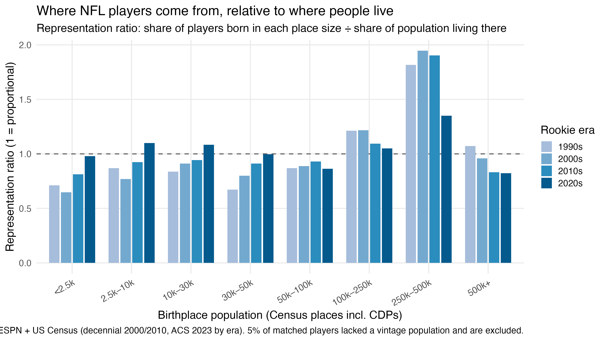
Data table: representation ratio by place size and era
| Birthplace size | 1990s | 2000s | 2010s | 2020s |
|---|---|---|---|---|
| <2.5k | 0.69 | 0.62 | 0.71 | 0.74 |
| 2.5k-10k | 0.74 | 0.67 | 0.76 | 0.87 |
| 10k-30k | 0.74 | 0.82 | 0.85 | 0.96 |
| 30k-50k | 0.69 | 0.79 | 0.94 | 1.03 |
| 50k-100k | 0.97 | 0.97 | 0.97 | 0.94 |
| 100k-250k | 1.26 | 1.28 | 1.19 | 1.14 |
| 250k-500k | 1.97 | 2.15 | 2.10 | 1.63 |
| 500k+ | 1.21 | 1.07 | 0.95 | 0.87 |
The urban share is shrinking
The change concentrates at the top of the density scale. The most-urban tenth of hometowns supplied the single biggest share of 1990s players. That share has fallen every era since, and in the 2020s cohort the most-urban decile is the smallest one. Recent players come disproportionately from mid-density places instead.

Football's hometowns are getting richer
Football's costs sit with institutions more than families. Schools supply the equipment and the coaching, which has long made football the most accessible major sport for an individual kid. It isn't free, though. Communities pay those institutional costs, and well-funded programs live where the tax base does. Ranked by median household income (population-weighted, era-matched vintages), the richest quarter of American places produced 10% of NFL players in the 1990s and 25% in the 2020s. The share from the poorest quarter fell from 43% to 33%. The trend holds within each income vintage separately, so it isn't a data artifact.
The NFL still draws disproportionately from poor places; 33% is well above the proportional 25%. But the trend runs toward affluence. What this data can't separate is the mechanism. Families may be buying development directly (private position coaching and 7-on-7 circuits have grown fast), or richer communities may be buying better programs. Those imply different fixes, and running the same analysis on the other three leagues (see the Across sports tab) is the natural test.

The money effect has also moved. In the 1990s, rich hometowns were underrepresented across the board, least severely in dense metros. By the 2020s that picture had inverted. Players from affluent low- and mid-density places now appear at or above their population share, while affluent urban cores don't. Whatever rich-kid pipeline exists runs through the suburbs.
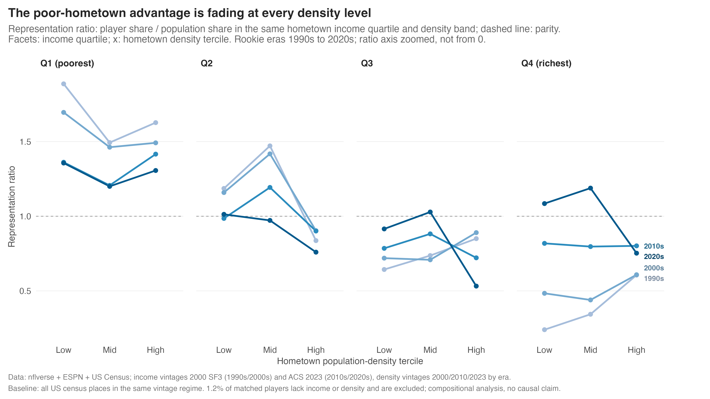
The kicker anomaly
One position group sits apart from all of this. In the 2020s, 43% of NFL kickers and punters come from a richest-quartile hometown, versus 25% of everyone else; the full ladder runs K/P, then QB (39%), then OL (31%), with defensive linemen and linebackers last at 20%. Composition doesn't explain it. Kickers are richer within every kind of place: inside the suburban ring, two of three kickers and punters come from a top-quartile town against 43% of other players there. The premium is decades old, punter-led (55% of 2020s punters, though on 29 players), and it survives the obvious counter-theory. We tested whether undrafted players in general come from richer towns, the who-can-afford-to-walk-on story, and they don't: undrafted and drafted players differ by one to three points in every era. Whatever selects kickers from rich families operates at the family level, and the 2020s roll call reads accordingly: Lake Forest, San Ramon, Frisco, Peachtree City, Chantilly, Scottsdale.

Born in X, raised in Y
Birthplace studies measure where the hospital was, not where an athlete learned the game. For 4,548 modern NFL players with both a birthplace and a geocoded high school, 35% went to high school in a different city than they were born in. Where the high school is known, it defines the hometown used here.
The map
The per-capita leaders are Southern: Noxubee County, MS (611 players per million residents), Fairfax City, VA (494), and Morris County, TX (492). New Orleans has sent 142 players to the NFL since 1990, which works out to 392 per million.
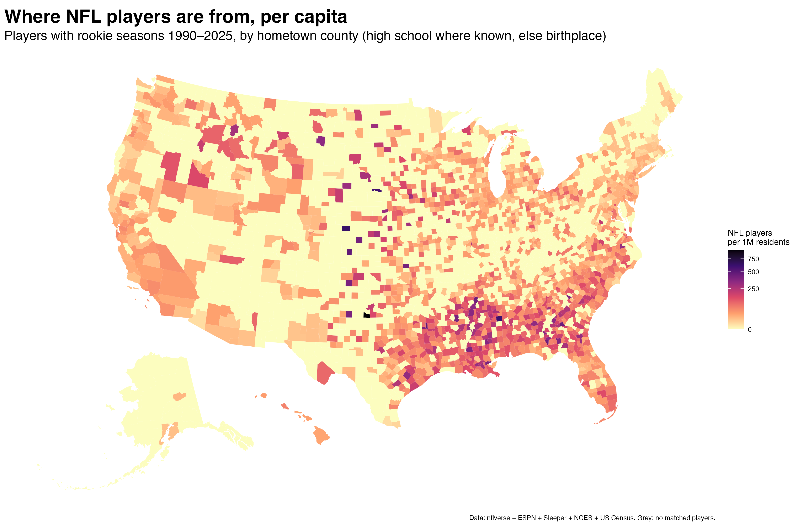
Birth month barely matters in football
The other half of the 2006 study was about when athletes are born. The NFL shows almost no relative age effect; no month runs more than about 15% above baseline in any era. Hockey does (see the NHL tab).
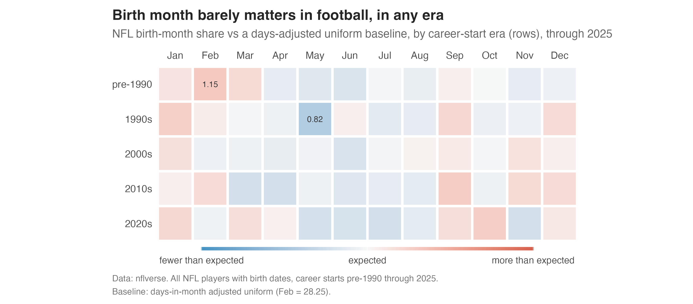
Baseball: the deepest rural deficit of the four leagues
Baseball contradicts the small-town story more sharply than any other league. US-born MLB players from places under 2,500 people appear at 0.16-0.35x their population share, the lowest rural readings in the study. Every bin from 50k to 500k overproduces, peaking at 250k-500k (2.06x in the 1990s, easing to 1.71 in the 2020s). The 500k+ metros are the exception at the top: roughly proportional for three eras, then slipping to 0.90 in the 2020s.
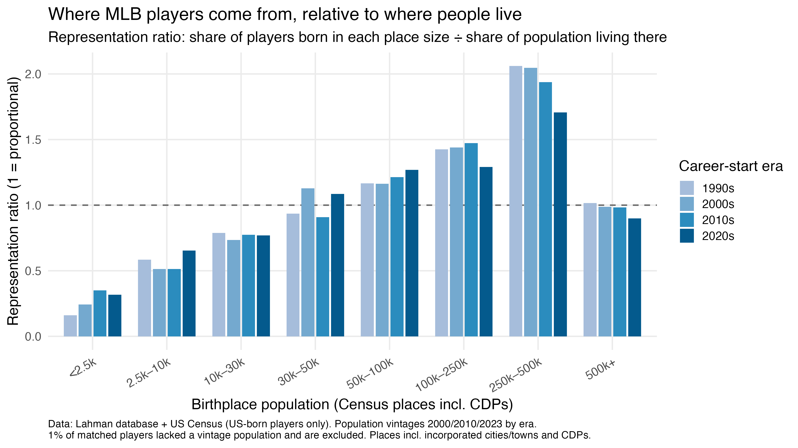
One reading is that modern baseball runs on facilities and organized play (travel ball, showcases, year-round leagues), and those live where suburban density and money do.
Money: richer than football in every era
Baseball's hometown-income mix has been wealthier than football's in every era, and it's climbing just as steeply. The richest-quartile share rose from 14% to 30% across the four eras while the poorest-quartile share fell from 34% to 24%, dipping just below proportional. That's roughly what travel-ball economics would predict.
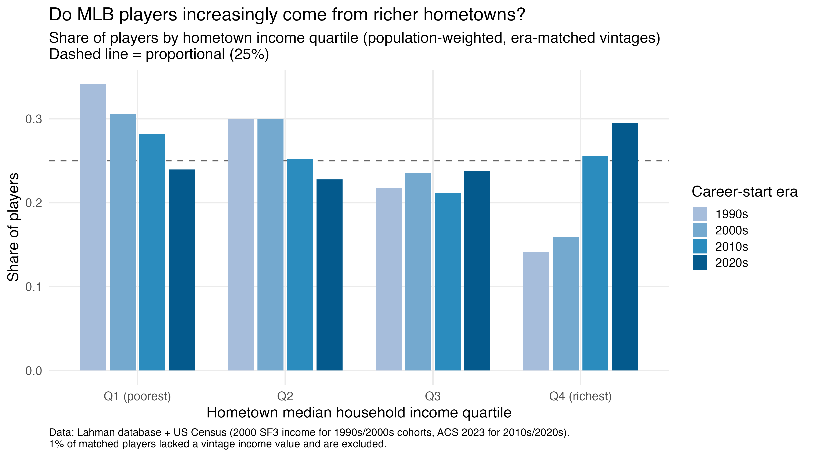
The map
The per-capita leaders since 1990 are Fairfax City, VA (304 per million), Defiance County, OH (155), and the city of St. Louis, which combines real volume (42 players) with a high rate (150 per million). California and the Sun Belt dominate raw volume.
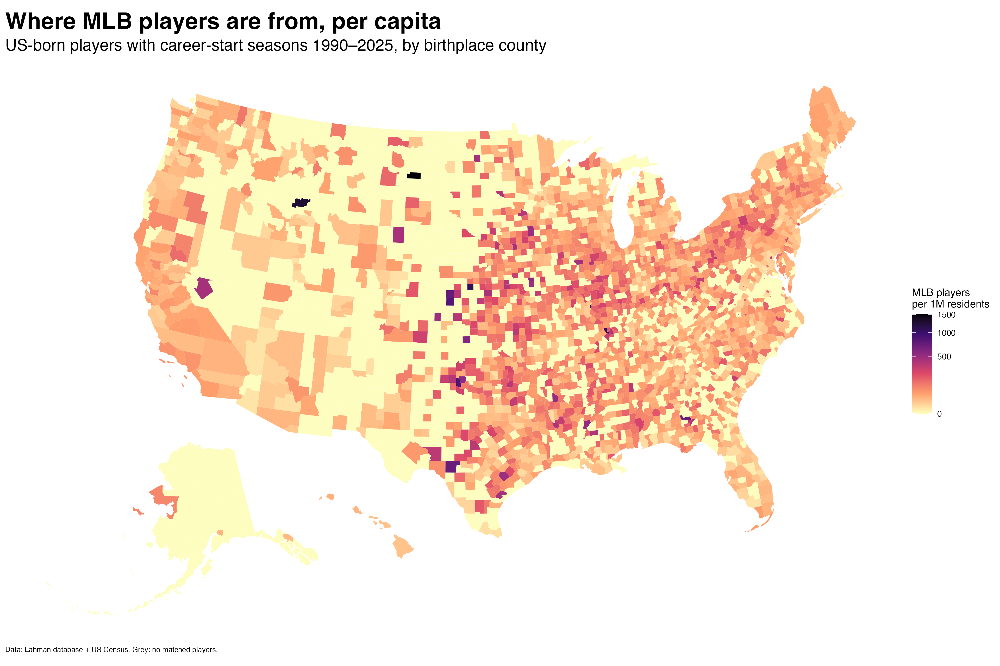
Birth month
MLB's birth-month distribution is close to flat. September runs modestly hot in recent eras (about 1.13-1.15x), and August hit 1.19x in the 2010s, both consistent with late-summer youth-baseball age cutoffs but nowhere near the size of hockey's January skew.
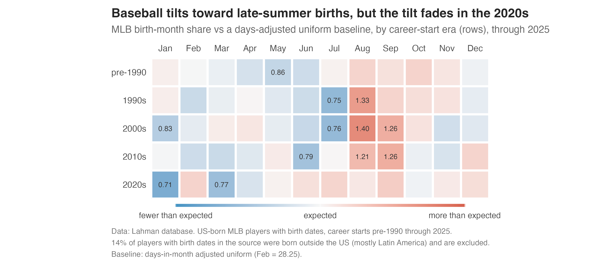
Hockey: the closest thing to the 2006 story, birthday effect included
Two caveats first. The geography here covers US-born players only, just under 1,000 matched across the four eras, because hockey's talent pool is majority Canadian. And with roughly 200-400 players per era the size bins are noisy, so the chart below pools eras. The census match rate is also lower than in the other sports (87-92%).
Within those limits, hockey shows the strongest anti-big-city pattern of the four sports. In the underlying per-era table, metros of 500k+ never reach 0.8 and the 250k-500k band peaks above 2x; the chart pools eras to keep those bars stable. The rural deficit is real but shallower than baseball's or basketball's. Hockey's geography is small-metro and northern; the per-capita map runs through Minnesota, Michigan, and New England.
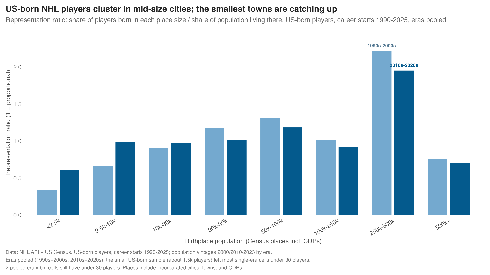
The map
The per-capita leaders since 1990 are Itasca County, MN (198 per million), Grand Forks County, ND, and Clay County, MN. That's the northern hockey belt, where the rinks are and the winters last.
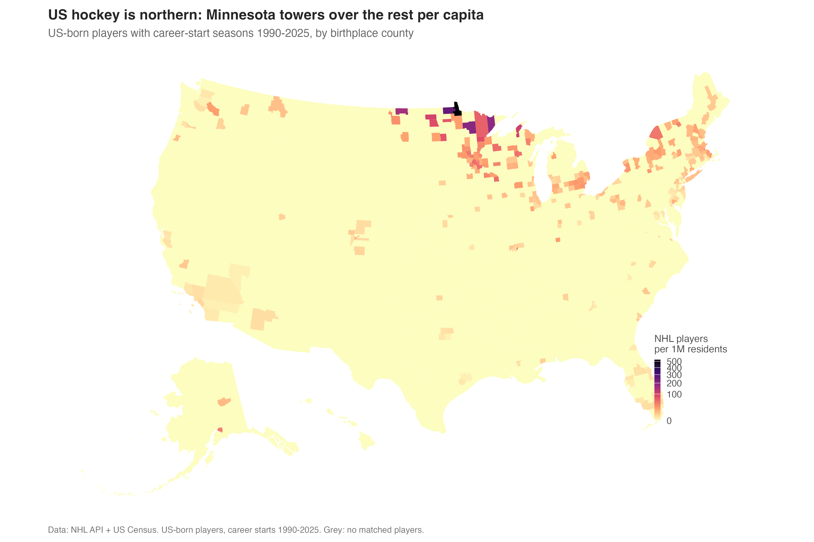
Money: hockey draws richest, and the gap is widening
Hockey hands families the biggest bill in American youth sports, and its hometowns show it. Nearly half (47.5%) of recent US-born NHL players come from the richest quarter of American places, up from 27.5% in the 1990s, while the poorest quarter supplies just 11%, down from 31%; no other league approaches either number. NHL samples are small, with some cells here holding only 20-30 players, and hockey's northern small-metro geography is itself affluent, so wealth and location overlap here (more on that in Across sports).
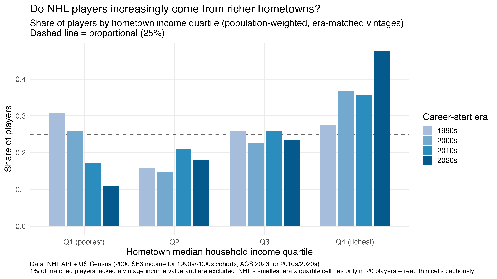
The January effect shows up in every era
Hockey made the relative age effect famous, and the front half of it appears here in every era. January and February births run 1.2-1.5x expected. The matching late-year deficit exists too, though it's noisier at these sample sizes; December births in the 2020s bottom out at 0.53x. A kid born just after the calendar-year age cutoff spends every youth season as the biggest, oldest player on the ice, and that head start is still visible on NHL rosters decades later. (This chart includes all NHL players regardless of birth country; the pool is majority Canadian.)
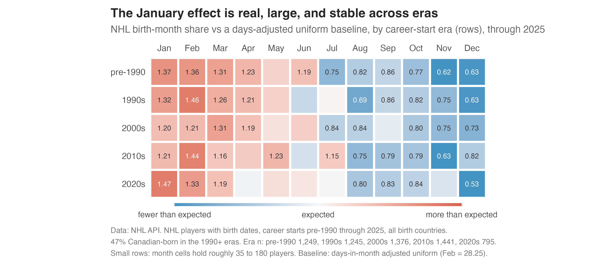
Basketball: the urban exception
Basketball breaks the pattern the other three sports share. Big cities (500k+) are the only place size where the NBA overproduces consistently in every era, at 1.84x in the 1990s and still 1.57x in the 2020s. The 250k-500k band has risen from 1.94x to 2.20x, the highest reading anywhere in this study. Small towns barely register (0.21-0.67x). While football, baseball, and hockey drift away from the metropolis, basketball keeps concentrating in the same mid-size and large metros everyone else is leaving.
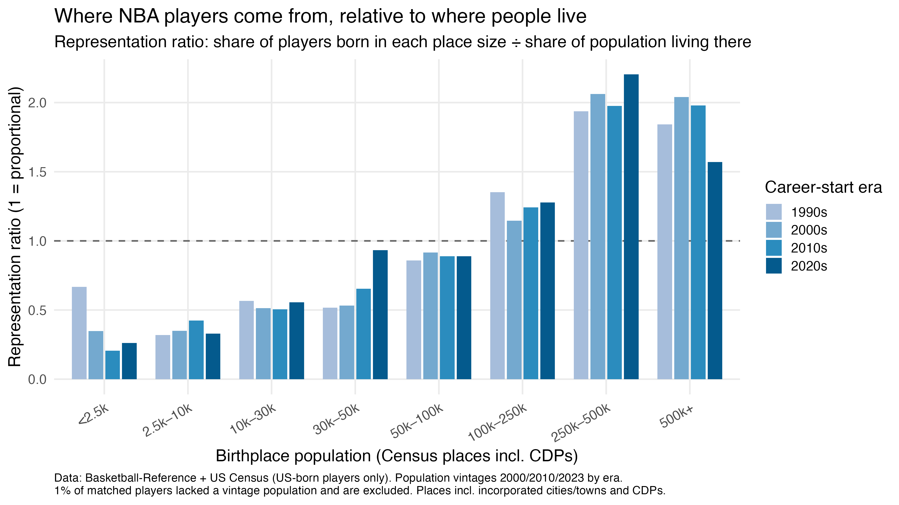
The map
The per-capita leaders since 1990 are the city of St. Louis (72 per million), New Orleans (61), and Hinds County, MS, home of Jackson (57). Basketball's per-capita map is the most urban of the four, led by independent cities and urban-core counties rather than small-county hotspots.
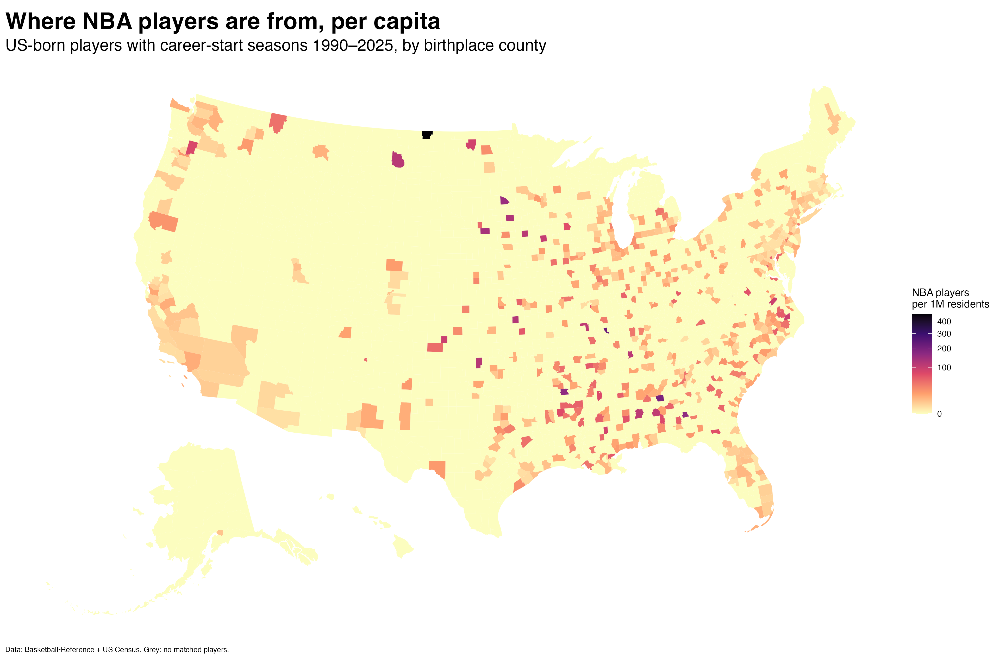
Money: the flattest income trend of the four leagues
Basketball is the counterweight to everything the other tabs show about money. Its richest-quartile hometown share is the lowest of the four leagues (15% in the 2020s, up from 6%), its growth is the flattest, and the recent trend actually points down. A third of NBA players still come from the poorest quarter of American places. Of the major sports, basketball is the one where talent and money are least correlated, which fits its urban, low-cost entry points. Worth knowing when reading this: place-level median income averages over big-city neighborhoods, which can understate affluence differences inside metros.
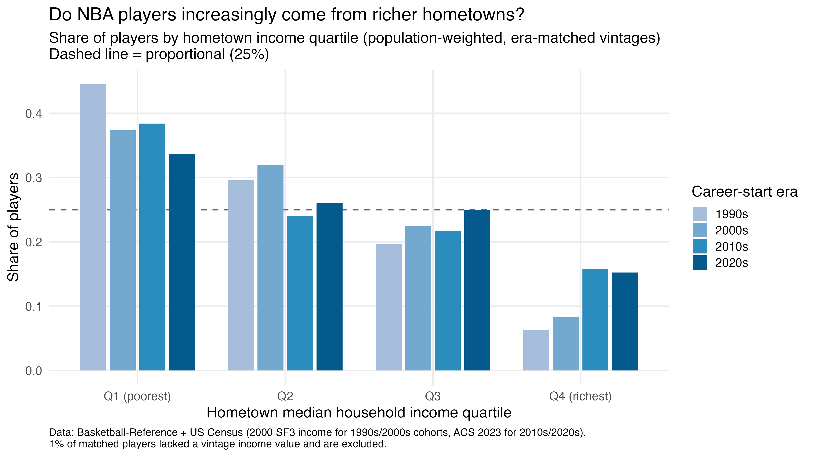
Birth month
Like football and baseball, basketball shows no meaningful relative age effect. The birth-month chart is flat within noise in every era.
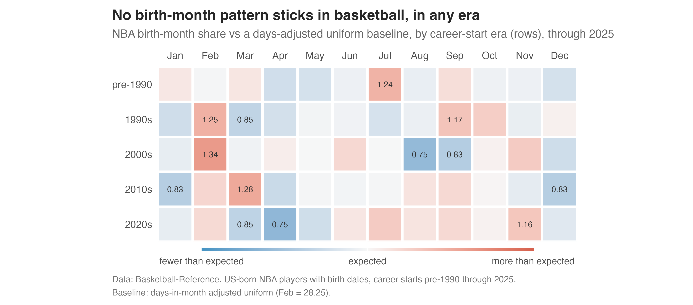
The four leagues side by side
Side by side, the four leagues force a revision of the 2006 story. No American major league is powered by small towns; every league's rural bins sit below proportional in both decades shown. The engine is the same everywhere, mid-size cities of 250k-500k at roughly twice their share. Once suburbs are counted, that band is where the "small-town" finding actually lived: places like Baton Rouge or Tulsa rather than actual small towns.
The divergence is at the top of the size scale. Football, baseball, and hockey all underproduce in 500k+ metros, and increasingly so. Basketball alone stays big-city, and its mid-size peak is still rising.
How far from the city, exactly
The original study's author acknowledged that proximity to bigger cities had never been examined, so we measured it: every hometown's distance to the nearest principal city of a metro area with a million or more people, using proper metro boundaries. Pooled across three decades, the 15-45 mile suburban ring is the most underrepresented band in the NFL, MLB, and NBA, and the deficit belongs specifically to bedroom communities inside a big metro's orbit; towns the same distance out but beyond any big metro overproduce. The 2006 paper called that pattern a small-town advantage. It was mostly independence from the metropolis, not smallness.
The twist is that the pattern is dying, and we can date its death. The suburban ring's NFL ratio climbed every decade, from 0.61 in the 1990s to 0.70, then 1.04, then 1.19. The 2010s is when it crossed both the population baseline and every other band, and by the 2020s it stands alone: the only kind of place still sending players above its population share. The ring's slice of NFL players nearly doubled, from 18.6% of the 1990s cohort to 36.3% of the 2020s cohort, against a constant 30.6% of Americans living there. Baseball made the same crossing in the same decade on a gentler slope. The suburbs were the dead zone of the American talent map for decades, and within one playing generation they became its center. That is the same migration the income charts show, seen through geography.
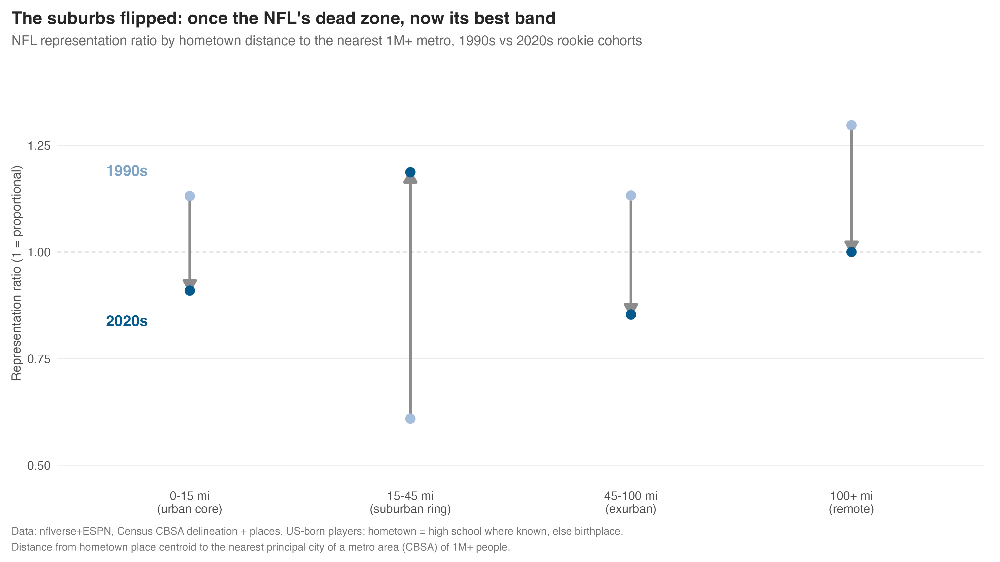
The flip also has an address. Around Sun Belt metros, suburban-ring representation nearly tripled, from 0.69x in the 1990s to 2.01x in the 2020s; around Northeast metros it barely moved, 0.62x to 0.70x. Atlanta's ring alone produced 149 NFL players in the 2020s, more than every Northeast metro's rings combined (155). New York's ring, the largest suburban population in the country, produced 48, a rate one fourteenth of Atlanta's. When people say football talent moved to the suburbs, they mean specific suburbs: Gwinnett County, not Westchester.
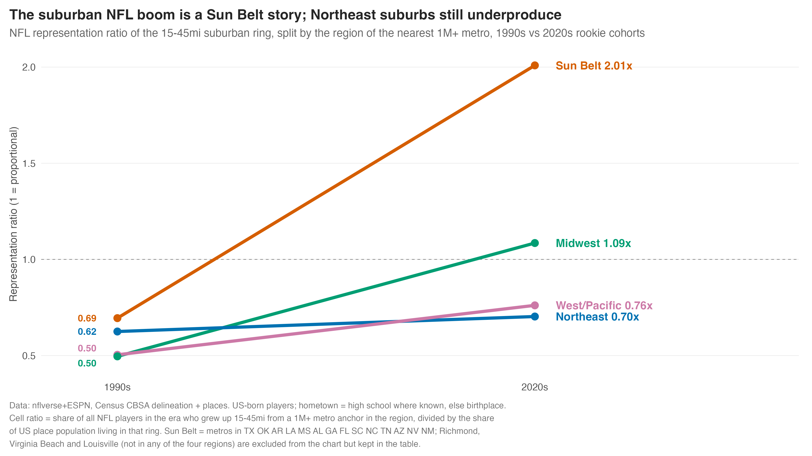
When you're born vs. where you're born
The birthday half of the 2006 study survives only where the youth system creates it. Hockey's calendar-cutoff club pyramid produces a large, stable surplus of January and February births. Football, baseball, and basketball, which run through schools or specialize later, show essentially none. Birth month, unlike geography, only matters where the development system turns age into an advantage.
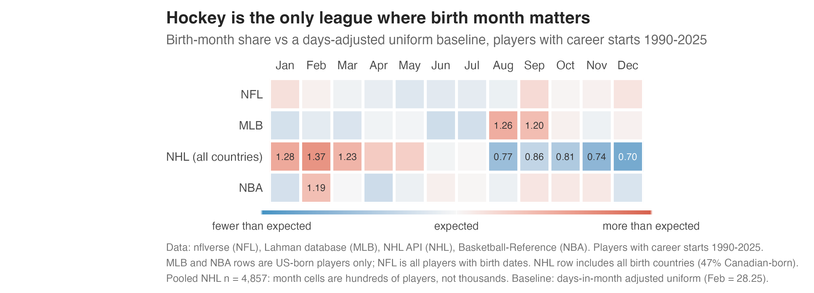
The income ordering matches who pays
The leagues differ in who pays for development. Football's costs are carried mostly by schools and communities, while baseball and hockey run through club systems that bill families directly. The same hometown-income analysis, run on all four leagues, orders them the way the family-pay account predicts. Hockey, the most expensive family sport, draws richest and is moving fastest (richest-quartile share 27% → 48%). Baseball sits richer than football in every era (14% → 30% vs. 10% → 25%). Basketball, the cheapest entry point in American sports, is lowest and flattest (6% → 15%) and still draws a third of its players from the poorest quarter of places.
Before treating this as proof, note that money and geography are entangled. Hockey's talent belt of small northern metros is affluent as a matter of geography; basketball's urban cores read poor at place level even where the metro is rich. Separating "rich families" from "rich places in the right location" needs the income-by-density interaction run per sport. The NFL version already shows the money effect migrating to the suburbs, and extending it across leagues is the next pass.
The SuperZip test
A harder version of the money question borrows the Washington Post's SuperZip method: rank every community on combined income and college-education percentiles, and call the places where the top 5% of Americans live elite. In the 1990s, every league underdrew from elite America. Not anymore. One in seven recent US-born NHL players grew up in a top-5% community (3.1x proportional). Baseball crossed proportional in the 2010s. The NFL reached exact parity in the 2020s after starting at one third of it. Basketball, at 0.4x, remains the only league still drawing mostly from ordinary and poor places. Education adds a level shift beyond income (player hometowns are more educated than they are rich in every league), but the climb itself is the income trend. Within the NFL, the elite-community positions are tight end, quarterback, and offensive line at about 2x; running backs, defensive linemen, and defensive backs sit near 1x.
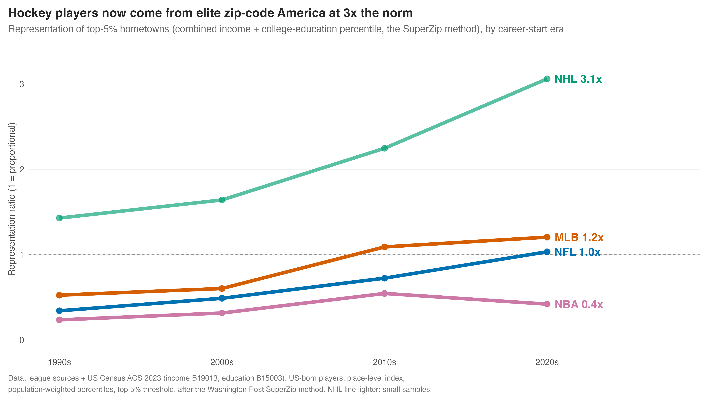
The political map, read as geography
The Washington Post's SuperZip work had one more axis: politics. Scoring every hometown county by its 2020 presidential lean gives a result that cuts against sports stereotypes. Every league's talent base sits in bluer-than-average counties, and the ordering is not what the culture war would guess: the NBA (.382 mean GOP share) and NHL (.392) are nearly tied as the most blue-county leagues, with MLB (.439) and the NFL (.446) closer to the .477 national baseline. Per capita, deep-blue counties out-produce deep-red ones in every league, mildly in football (1.7x) and enormously in hockey (9.1x), because American hockey grows in northern metro suburbs. One league is moving: the NFL has drifted redward every decade on a fixed map, from 43.7% to 45.4% mean county GOP share, and scored on the 2008 map its newest cohort sits within half a point of the national average. That drift is the suburban and Southern migration wearing its third costume, after income and distance.
To be explicit about what this measures: the political lean of the counties players grew up in, nothing about how any player votes.

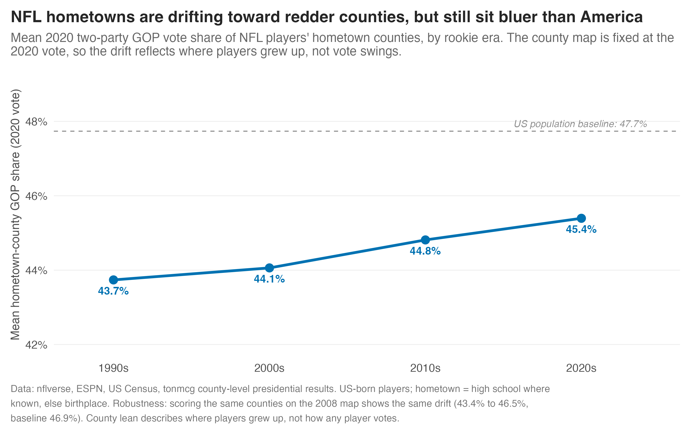
Limitations
- Coverage windows differ by source. NFL birthplaces come from ESPN records (~90% of 1990+ rookies; thinner for 2000s-2010s fringe players). MLB (Lahman) and NBA (Basketball-Reference) are near-complete; NHL geography is US-born only with small samples (200-400 per era) and an 87-92% match rate.
- Era cohorts are career-start decades, and cohort edges can differ by one season across sports because the sources report first seasons differently.
- Birthplace is not hometown. The NFL analysis substitutes high-school location where known (35% of players differ); other sports currently use birthplace only. Birthplace reporting also gravitates toward metro anchor cities, which flatters urban cores slightly.
- Population and income vintages are the nearest census (2000 / 2010 / 2023) rather than each player's exact childhood year, and the 2010s cohort has no true income vintage of its own.
- Township-form municipalities (New Jersey especially) aren't Census "places" and account for most unmatched players (~3-4%).
What's next
- Income-by-density interaction for MLB, NHL, and NBA, to untangle rich families from rich geographies.
- High-school hometowns beyond the NFL (the source data exists for MLB and NBA).
- Extending the NFL era comparison to pre-1990 rookie classes.